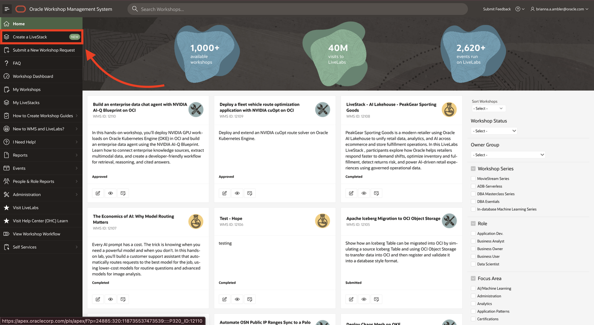
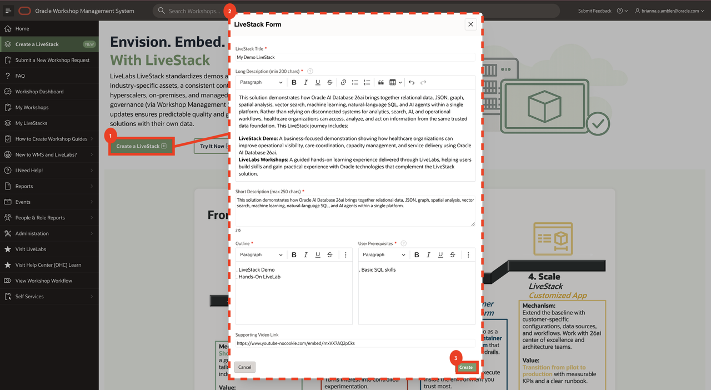
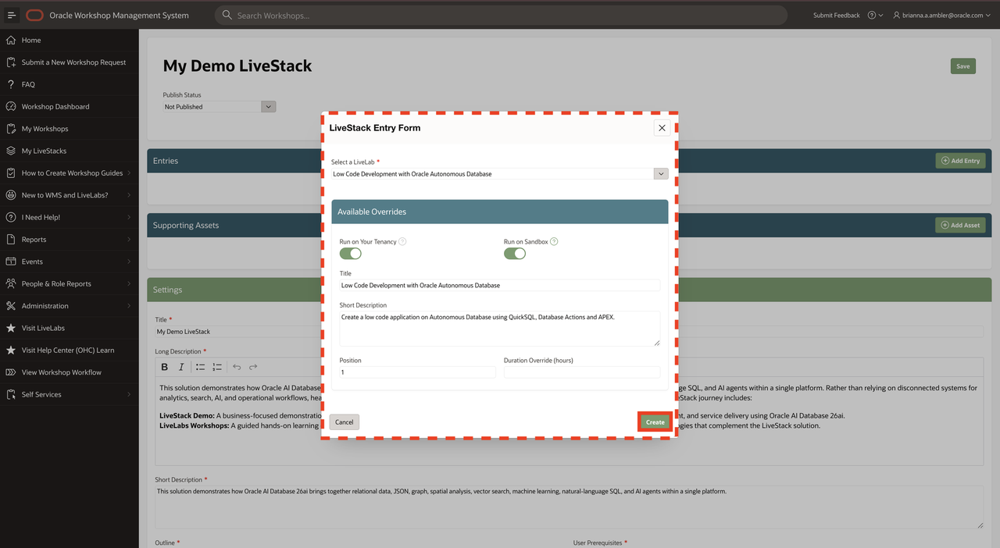
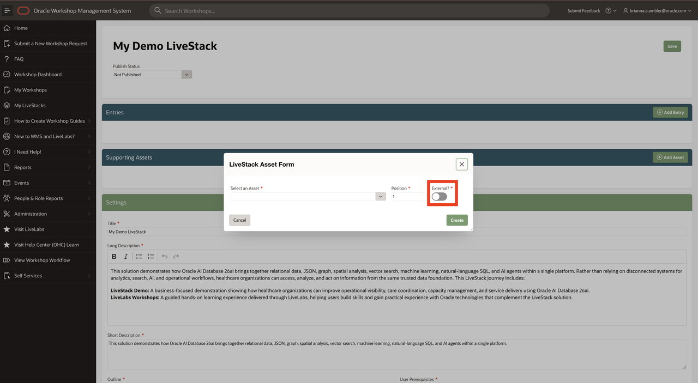
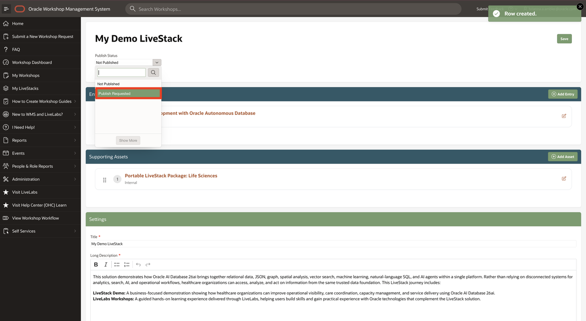

WMS author guide
Create a LiveStack
Assemble the bundle in WMS, add its entries and assets, and request publication. This does not build the demo application itself.
Search the introduction, LiveLabs guide, and WMS guides.
Before you start: you need WMS access, your demo and workshop names or IDs, and assets you own or that are shared with you.
Step 1
Open Create a LiveStack
- Sign in to WMS.
- Select Create a LiveStack in the main navigation.
- Review the introduction, then select Create a LiveStack on that page.
Expected result: the LiveStack initialization form opens.


Step 2
Describe the business solution
- Title: name the solution and outcome.
- Long Description: explain the scenario and included experiences (at least 200 characters in the shown form).
- Short Description: summarize the value (up to 250 characters).
- Outline and User Prerequisites: state the path and what learners need.
- Supporting Video Link: add a relevant introduction, if available.
Select Create. WMS opens LiveStack Details; find the bundle later under My LiveStacks.


Step 3
Add the demo and workshop entries
- In LiveStack Details, select Add Entry.
- Search for a LiveLab by name or ID and select it.
- Review the available overrides: run options, title, description, position, and duration where shown.
- Select Create. Repeat for the remaining entries.
Run on Sandbox and Run on Your Tenancy appear only when the selected LiveLab supports them. Disable an option if it should not be offered through this bundle.
Use Position or drag entries in the report to put the demo and workshops in the intended order.


Step 4
Add supporting assets and set visibility
- Create or manage files and links under Self Services → Assets.
- Return to the bundle and select Add Asset.
- Search by name or ID. Only assets you own or that are shared with you appear.
- Set Position and the External? switch, then select Create.
External: visible to all audiences.
Internal: visible only to Oracle employees.
Check the audience before exposing an asset. Do not mark internal-only material as external.


Step 5
Review the bundle and request publication
- Check entry order, run options, descriptions, prerequisites, asset links, and audience visibility.
- Set Publish Status to Publish Requested.
- Select Save and wait for the review outcome and notification.
Expected result: a publication request—not an immediately published bundle.
Published changes are live. The source guide states that changes to published LiveStacks appear immediately in LiveLabs. Review each edit before saving.


Reference and screenshots: Step-by-step source guideDemo source and guides